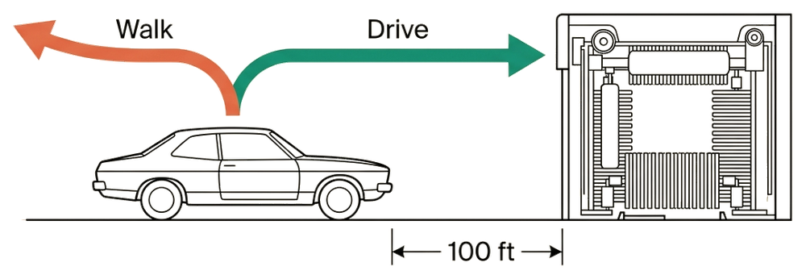

Transcripts
Carwash Test transcripts

My car is dirty. The carwash is 100 feet away. Should I walk or drive?
ChatGPT 6.1 Sol is 11 runs and 11 Passes, 10 of them inside the winner's circle (the eleventh is Thai, which has no threshold). Released September 29, a week after GPT-6 Sol, it was tested the next day across all five effort tiers in English and at Medium in the six non-English corpora. The picker is the same five tiers, except that the lowest now reads Low where GPT-6 had Light.
The point release is terser than the model it replaces. Every English tier opens on "Drive—" and gives the reason in one clause, at ~12 to ~16 tokens against Sol 6's ~18 to ~20. The difference is the distance. Every Sol 6 tier conceded that the carwash is "only 100 feet away"; no 6.1 tier mentions it. In style, 6.1 Sol sounds more like Astra than like Sol 6. Its Indonesian, Turkish and Chinese answers are close to Astra's almost word for word. Five of its six non-English answers carry an emoji, as five of Astra's did, while Sol 6's carried none. No tier showed a reasoning trace or a summary; see Trace exposure.
Terra 5.6, for comparison. GPT-5.6 Terra, the middle model of the July series, was not tested at launch. It was still selectable as a legacy model on September 30, so it was run that day on the same grid: 11 runs, 11 Passes, 10 in the winner's circle. Terra is the terse, joking kind of answer — "Drive—unless you enjoy arriving at the carwash without the car", ~8 to ~16 tokens in English, with no tier mentioning the 100 feet — and it echoes its July sibling Sol 5.6 in places. Sol 5.6 made the same arriving-without-the-car joke in French, and the two Chinese answers open with the same words. Across Sol 5.6, Terra 5.6, Sol 6 and Sol 6.1, only Sol 6 sounds different: it is the only one that concedes the distance at every English tier and the only one with no emoji in any language. On one short question, that is a difference of voice, and says nothing about what the models are underneath.
The GPT-6 family — Astra, Sol and Luna — is 32 runs and 32 Passes, 28 of them inside the winner's circle. GPT-6 Astra, the top tier, reached general availability on September 4; Sol and Luna followed on September 22, and all three were tested that day in the ChatGPT consumer interface. Each ran across every effort tier in English and at Medium in the six non-English corpora. The picker has new names: Light / Medium / High / Extra High / Ultra. Luna, the smallest tier and the one Free users get, stops at Extra High and has no Ultra.
There was nothing left to improve. GPT-5.6 Sol went 19 for 19 here and GPT-5.6 Luna 14 for 14, so GPT-6 inherits a perfect record on this item and keeps it. What the sweep shows instead is how little the effort dial changes. Astra's Medium and High answers are verbatim identical; so are Sol's Medium and High, and Luna's Light and High, emoji included. Across five tiers, Astra produces one sentence, lightly reworded, and the Ultra answer is only two tokens longer than the Light one. Sol's answers are the most consistent: every tier names the car and concedes the distance in the same breath, "even if it's only 100 feet away."
Astra and Luna add emoji and exclamation marks in several languages. Tone isn't scored; the verb is, and it is right in all 32.